Share Scan: शुरुआत से हर चीज़
यह गाइड उन लोगों के लिए है जिन्होंने share बाज़ार में अभी कदम रखा है। App install करने से लेकर scan, stock की जानकारी, trade plan, Paper Trading, watchlist, alerts और हर setting तक, सब कुछ आसान भाषा में, एक-एक कदम।
5 कदम में शुरुआत
- App install करेंGitHub से ShareScan.apk download करके install करें।
- पहला scan चलाएँऊपर के scan बोर्ड या हरी pill से SCAN दबाएँ, 2 से 5 मिनट रुकें।
- List पढ़ेंसबसे ऊपर सबसे अच्छे score वाले stocks। STRONG वाले पहले देखें।
- Stock खोलेंLine दबाएँ: score क्यों, R/S, ख़बरें और trade plan।
- पहले अभ्यास📝 Paper Trading में नकली पैसे से trade करके सीखें।
App install और update
पहली बार phone में लगाना, और नया version आने पर update।
Install करना
- Phone के browser में यह link खोलें: github.com/rohitrot738/Share_scan → ShareScan.apk। यह हमेशा सबसे नया version देता है।
- Download पूरा होने पर file खोलें। Android पहली बार पूछेगा "इस source से install करने दें?"। Browser या Files app के लिए Allow चालू करें, फिर back दबाएँ।
- Install दबाएँ। App का नाम Share Scan है, हरे R वाला icon।
- पहली बार खोलने पर notification की अनुमति माँगी जाए तो Allow दें, ताकि alerts आ सकें।
Update करना
नया version आने पर app में सबसे ऊपर एक banner दिखता है: Update करें दबाएँ, download होने के बाद Install करें। नया version पुराने के ऊपर install होता है, आपकी watchlist, filters और settings वैसे ही रहते हैं। हर release एक ही पक्की key से sign है, इसलिए uninstall करने की ज़रूरत नहीं।
खुद देखना हो तो Menu → Update देखें। क्या नया आया, यह Menu → App के बारे में → "क्या नया है" में मिलता है।
पहला scan
Scan ही app का दिल है: बाज़ार के हज़ारों stocks को जाँचकर सबसे अच्छे ऊपर लाना।
App के दो रूप (background) हैं, और दोनों में scan शुरू करने की जगह अलग है:
- Galaxy (पहले से चालू): ऊपर बड़ा "scan बोर्ड" है। उसमें SCAN दबाएँ।
- Space Glass (compact table): ऊपर की पतली header में हरी pill है, जैसे "SCAN 100% • 2,623 STOCKS"। उसे दबाएँ, एक panel खुलेगा, उसमें SCAN दबाएँ।
Panel में दो तरह के scan हैं:
- Breakout स्कैन: वे stocks जो अपने हाल के ऊँचे भाव के पास हैं और ऊपर निकलने की तैयारी में दिखते हैं। ज़्यादातर यही इस्तेमाल होता है।
- Support स्कैन: वे stocks जो 6 महीने से एक भाव के नीचे बंद नहीं हुए, जबकि बार-बार उस तक आए। मज़बूत "फ़र्श" वाले stocks ढूँढने के लिए।
Scan में आम तौर पर 2 से 5 मिनट लगते हैं (BSE भी चालू हो तो ज़्यादा)। App से बाहर जाएँ या screen बंद करें, तब भी scan चलता रहता है: notification में progress और रोकें बटन दिखता है, और पूरा होने पर नतीजे की notification आती है। बीच में रोकना हो तो panel में रोकें।
आख़िरी scan phone में सहेजा रहता है, इसलिए app दोबारा खोलने पर list तुरंत दिखती है। Clear scan से उसे मिटा सकते हैं।
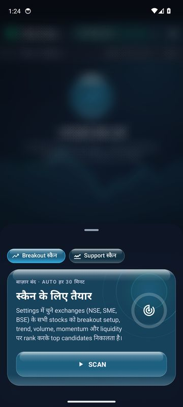
Stocks की list पढ़ना
Scan के बाद stocks score के हिसाब से ऊपर से नीचे लगते हैं।
हर line में क्या है
| हिस्सा | मतलब |
|---|---|
| #1, #2… | Rank: score में stock का नंबर। |
| RELIANCE | Stock का symbol (NSE/BSE पर उसका छोटा नाम), नीचे company का नाम। |
| NSE / BSE / SME | किस exchange पर है। SME = छोटी companies का NSE Emerge। |
| ₹ भाव | आख़िरी भाव (live scan में चलता भाव)। |
| आज बदलाव | पिछले कारोबारी दिन के बंद भाव से आज भाव कितना % बदला: compact table में भाव के नीचे छोटे अक्षरों में, cards में "▲1.20% आज · ▲5.20% 5D" की तरह। बाज़ार खुला हो और live scan चालू हो तो यह चलता रहता है। हरा = ऊपर, लाल = नीचे। |
| 5D बदलाव | पिछले 5 कारोबारी दिनों में भाव कितना % बदला। हरा = ऊपर, लाल = नीचे। |
| RVOL | आज का volume, पिछले 20 दिनों के औसत का कितना गुना। 2× या ज़्यादा = volume में उछाल। |
| Score | 0 से 100। जितना ज़्यादा, breakout का setup उतना अच्छा। |
Score के दर्जे
- STRONG: 75 या ज़्यादा। बाज़ार के लगभग top 7–8% stocks।
- WATCH: 62 से 75। नज़र रखने लायक।
- WEAK: 62 से कम।
छोटे निशान (badges)
- NEW: पिछले scan के बाद top list में नया आया।
- ▲3 / ▼2: पिछले scan से rank कितना ऊपर या नीचे गया।
- ★: आपकी watchlist में है (compact table में ऐसे stock का score सुनहरा दिखता है)।
- 📰: पिछले 24 घंटे में exchange पर company की कोई घोषणा आई। दबाने पर सीधे ख़बरें खुलती हैं।
- 🛞 🚗 💊: company के मुख्य products के icon (Settings से चालू/बंद)।
List पर क्या-क्या कर सकते हैं
- Line या card दबाएँ: stock का पूरा detail खुलता है।
- Watchlist में जोड़ें: compact table में line को दबाकर रखें; Galaxy cards में ☆ दबाएँ।
- नीचे की तैरती bar (Space Glass) या cards के ऊपर chips (Galaxy): Filters, ★ Watchlist, sort (Score, आज बदलाव, RVOL, 5D, Price, R/S), सेक्टर और top 10 शेयर करना। Bar को दाएँ-बाएँ खिसकाएँ।
- 🔍 खोज: symbol या company का नाम लिखें, जैसे TCS या Reliance।
List के आख़िर में: बिना chart वाले शेयर
Scan हर listed शेयर का 6 महीने का chart Yahoo Finance से लेता है, और उसी से score बनता है। Yahoo कभी-कभी किसी request का जवाब नहीं देता, इसलिए जिनका chart पहली बार में नहीं आया, scan आख़िर में उन्हें एक बार और माँगता है (उस समय pill पर 100% दिखता रहता है)। फिर भी कुछ शेयरों का chart नहीं मिलता, तो उनका score नहीं बनता। ऐसे शेयर भी list में हैं: score वाले सारे शेयरों के बाद, सबसे नीचे। इसलिए list के ऊपर की गिनती उतनी ही है जितने शेयर scan ने जाँचे।
- कहाँ मिलेंगे: list को आख़िर तक नीचे खिसकाएँ, या 🔍 में symbol या नाम लिखें। ये तभी दिखते हैं जब कोई filter न लगा हो और "कितने stocks दिखाएँ" में सभी चुना हो। Sort कोई भी हो, ये नीचे ही रहते हैं।
- Rank की जगह "—": score नहीं, तो नंबर भी नहीं। Watchlist में हो तो ★।
- "Chart नहीं मिला" (compact table में RVOL की जगह "Chart नहीं"): भाव, बदलाव और score की जगह "—"। Symbol, company का नाम और exchange (NSE / BSE / SME) दिखते हैं।
- वजह वाली line: "🆕 नया listing · अभी 3 सत्र" = शेयर कुछ ही दिन पहले listed हुआ, और score के लिए कम से कम 21 सत्र (कारोबारी दिन) चाहिए। "Yahoo पर भाव नहीं" = Yahoo के पास उसका chart नहीं: trading रुकी हुई है, नाम बदला है, या Yahoo उसे रखता ही नहीं (कई SME शेयर)।
ऐसे शेयर को दबाने पर, क़दम-ब-क़दम:
- नीचे "SYMBOL का chart ला रहे हैं…" आता है: app उसी समय Yahoo से chart माँगता है।
- Chart मिल गया (कभी scan के समय Yahoo कुछ देर जवाब नहीं देता) तो पूरा detail खुलता है, बाक़ी शेयरों जैसा।
- नया listing हो और बड़े पैसे की चाल में हो, तो उसका अब तक का छोटा chart और उसका card खुलता है (भाव NSE की अपनी files से)।
- कुछ न मिले तो नीचे लिखा आता है कि उसका chart Yahoo पर नहीं है।
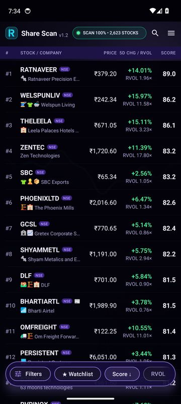
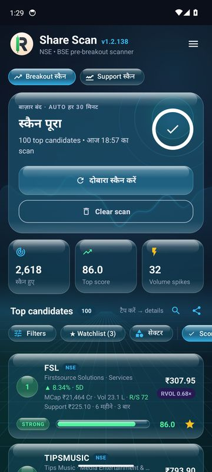
Score कैसे बनता है
हर stock के 6 महीने के रोज़ के भाव और volume से, पाँच हिस्सों में।
| हिस्सा | वज़न | क्या देखता है |
|---|---|---|
| Breakout के क़रीब | 35% | भाव 20 दिन के high के कितना पास है, और उससे पहले भाव कितना शांत (कम दायरे में) रहा। |
| Trend (रुझान) | 20% | भाव 20 और 50 दिन के औसत के ऊपर है या नहीं, और औसत ऊपर की ओर चढ़ रहे हैं या नहीं। |
| Volume उछाल | 20% | आज का volume (RVOL) और शांत हफ़्ते के बाद volume का बढ़ना। |
| Liquidity (तरलता) | 15% | रोज़ कितने रुपये का कारोबार होता है। कम कारोबार वाले stock में ख़रीदना-बेचना मुश्किल। |
| Momentum (तेज़ी) | 10% | हाल की चाल कितनी मज़बूत है। |
| Support bonus | +5 तक | Stock किसी पक्के support (फ़र्श) के ऊपर टिका हो तो थोड़ा अतिरिक्त। |
Stock के detail में "Score कैसे बना" के हर हिस्से को दबाएँ, उसका पूरा हिसाब नीचे खुल जाता है।
App पिछले data से सीखता भी है
- सीखे हुए setups: हर शाम app पूरे बाज़ार के पिछले 2 साल के हर दिन पर वही plan बनाकर देखता है कि आगे क्या हुआ। जिन शर्तों के मेल (जैसे "Breakout आज + volume 2×") पर trades औसत से साफ़ ज़्यादा सफल रहे, वे card पर अपने असली success % के साथ दिखते हैं।
- ⚠ सीखी गलती: जिन मेलों पर trades बार-बार उल्टे गए, उन पर चेतावनी।
- 📈 तेज़ी setup: जिन शर्तों के बाद 20 दिन में तेज़ चढ़ाई औसत से ज़्यादा आई।
Filters, sort, sector और खोज
List को अपनी पसंद के stocks तक छोटा करना।
Filters
Filters दबाएँ। हर slider की कम-से-कम और ज़्यादा-से-ज़्यादा सीमा खिसकाएँ, ऊपर लिखा रहता है कि कितने stocks match हुए। फिर लागू करें। Reset से सब पहले जैसा।
- Market cap, भाव, Volume, Turnover (रोज़ का कारोबार ₹ में), RVOL, 5D बदलाव, आज का बदलाव, Score
- 20 दिन के high से दूरी, शांत दायरा, 50 DMA से दूरी
- RSI (14), MACD की signal से दूरी, MACD crossover कितने दिन पहले
- Support से दूरी और support कितना पुराना
- "कितने stocks दिखाएँ": अपने-आप सभी (scan में आया हर शेयर list में)। चाहें तो score के हिसाब से सिर्फ़ top 25, 50, 100 या 200।
- 📈 सिर्फ़ लंबी अवधि की quality companies: ROCE 15% या ज़्यादा, Debt/Equity 0.5 या कम, promoters 50% या ज़्यादा, कोई pledge नहीं, और EPS की बढ़त 12% या ज़्यादा (जहाँ आँकड़ा है)।
Sort
Score, आज बदलाव, RVOL, 5D बदलाव, Price, R/S या Support पर list लगाएँ। उसी chip को दोबारा दबाने पर क्रम उल्टा (↓ / ↑)।
Sector
सेक्टर chip से हर sector की ताकत दिखती है (आज कौन सा sector सबसे मज़बूत)। किसी sector को दबाएँ तो list सिर्फ़ उसी के stocks तक। Scan में कौन से sectors शामिल हों, यह Menu → स्कैन में हर exchange के लिए अलग चुन सकते हैं।
खोज
🔍 दबाकर symbol या नाम लिखें। तीन या ज़्यादा अक्षर लिखें तो नाम के बीच के spaces भी अनदेखे होते हैं, जैसे "bajajauto" से Bajaj Auto मिल जाता है।
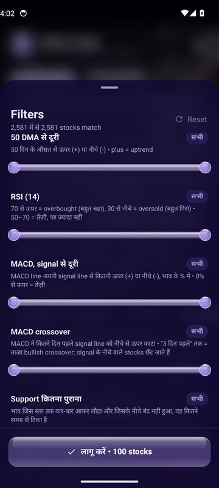
Stock का detail
List में किसी stock को दबाने पर उसकी पूरी जानकारी एक sheet में।
सबसे ऊपर exchange, symbol, company और sector, आज का भाव, आज का और 5 दिन का बदलाव, और score की पट्टी (STRONG/WATCH/WEAK)। उसके नीचे दो tabs हैं:
जानकारी tab
- चार्ट: पिछले 60 sessions का भाव, entry, stop-loss (SL), targets (T1, T2) और support की रेखाओं के साथ। चार्ट या उसके नीचे की पट्टी "🎯 लक्ष्य, Trade plan…" दबाएँ तो Trade window खुलती है (अगला भाग)।
- Score कैसे बना: पाँचों हिस्से, हर एक दबाने पर उसका पूरा हिसाब।
- R/S · रोहित सिलेक्शन: company के नतीजों, कर्ज़, shareholding, valuation वगैरह की जाँच (भाग 8)।
- लंबी अवधि की checklist (moat): ROCE, कर्ज़, ब्याज cover, मुनाफ़े के पीछे cash, लगातार मुनाफ़ा, margin, promoters, उनकी बिक्री, pledge और auditor। हर एक ✓, ✗ या – (आँकड़ा नहीं)।
- R/S इतिहास और मुख्य आँकड़े: शीर्षक दबाकर खोलें/बंद करें (▾/▴)। इतिहास में हर quarter के नतीजे, FII/DII/promoter की हिस्सेदारी (▲ ख़रीदा, ▼ बेचा), सालाना cash flow और 3 साल का भाव।
- क्या बनाती है: company के products, तस्वीरों के साथ। किसी product को दबाएँ तो उसे बनाने वाली सारी companies list में।
- ब्रांड: जिस company के brands app में जुड़ चुके हैं, उसके "क्या बनाती है" के नीचे 🏷️ "59 brands देखें" की पट्टी आती है। उसे (या "क्या बनाती है" शीर्षक को) दबाएँ तो एक नई window खुलती है, जैसे chart दबाने पर Trade window: ऊपर कुल गिनती और तस्वीरें कहाँ से हैं, फिर हर product की टोली (जैसे 🍪 Packaged food · 29) में दो-दो brands की तस्वीरें, हर एक के नीचे नाम। जिस brand की तस्वीर नहीं, उसका नाम ही बड़े अक्षरों में।
- नीचे Groww, Angel One, Zerodha: symbol copy होता है और वह app खुलता है, वहाँ search में paste करें। TradingView पर चार्ट बड़ा chart खोलता है (Settings में दूसरी site चुन सकते हैं)।
खबरें tab
- सबसे ऊपर आने वाले events: नतीजों की board meeting, dividend की record date, AGM, bonus, split, buyback की तारीख़ें, company की अपनी filings से।
- फिर exchange की घोषणाएँ और ख़बरें, हर एक पर प्रकार (नतीजे, order, dividend…) और "प्री-मार्केट" या "लाइव"। दबाने पर पूरी ख़बर या PDF।
ब्रांड कैसे देखें
- 🔍 में company का नाम लिखें, जैसे ITC, और उसकी line दबाएँ।
- जानकारी tab में नीचे "क्या बनाती है" तक खिसकाएँ।
- उसके नीचे 🏷️ "59 brands देखें" दबाएँ (या "क्या बनाती है" शीर्षक)। Brands की नई window खुलती है; नीचे खिसकाकर सारी टोलियाँ देखें।
- Back या ✕ दबाएँ तो वापस stock के detail में।
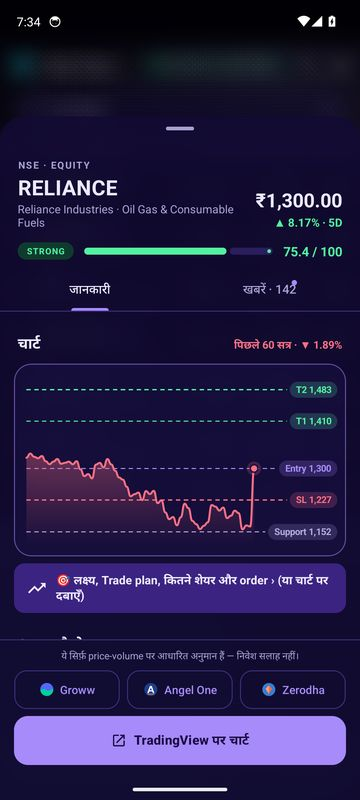
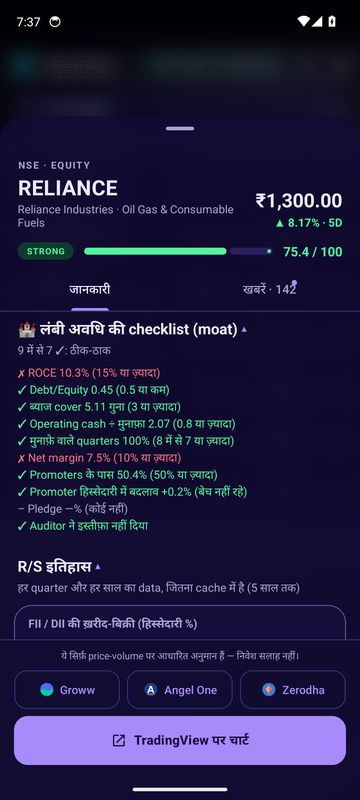
Trade window: लक्ष्य, plan, कितने शेयर
Detail में चार्ट दबाने पर खुलने वाली बड़ी window। Trade की पूरी तैयारी यहीं।
लक्ष्य: कब के लिए कितना
- ⚡ Intraday (आज ही, MIS): आज की 5-minute candles से। 9:15–9:30 के दायरे के ऊपर और VWAP के ऊपर बंद हो तो BUY, नीचे और VWAP के नीचे बंद हो तो SELL। Stop दायरे के बीच, target 1:1.5 और 1:2। 14:45 के बाद नई entry नहीं, 15:15 तक बंद।
- 📅 Short-term (2 दिन से 4 हफ़्ते, delivery): trade plan का entry, stop और पहले दो target, कितने दिन में।
- 🌱 Long-term (1 से 5 साल): R/S का खरीद भाव और असली कीमत (fair value); उसके नीचे अभी का भाव खरीद भाव से कितने % ऊपर है (या ✓ के साथ कितना नीचे), और असली कीमत किन दो हिसाबों का बीच है। पूरा हिसाब अगले भाग (R/S) में।
Trade plan
- Entry: 20 दिन का high + थोड़ा सा (0.1 ATR), ताकि breakout पक्का हो।
- Stop-loss: 10 दिन का low, entry से 1 से 2 ATR के बीच रखा जाता है।
- Targets: जोखिम (R) का 1.5, 2.5 और 4 गुना, साथ में लगभग कितने कारोबारी दिनों में लगते हैं।
- App पिछले data से सीखकर stop और target बदल सकता है; ऐसा हो तो वहीं लिखा होता है।
कितने शेयर लें
- अपनी कुल पूँजी डालें (जैसे ₹5,00,000)।
- हर trade में कितना जोखिम: 0.5%, 1%, 1.5% या 2%। शुरुआत में 1% रखें।
- Delivery (CNC) या Intraday (MIS) चुनें।
App बताता है कितने शेयर, कितना पैसा लगेगा, stop लगा तो कितना नुकसान और हर target पर कितना फ़ायदा। Delivery में एक stock में पूँजी का 25% से ज़्यादा नहीं, intraday में margin लगभग 5 गुना।
Order ticket
Broker में डालने वाले orders: entry (breakout के लिए SL-LIMIT, वरना LIMIT), फिर stop और target (delivery में GTT OCO, intraday में SL-M और LIMIT)। Copy या Share करके Kite, Angel One या Groww में ख़ुद डालें। App कभी असली order नहीं भेजता।
Smart money और जीतने के आसार
- Smart money: पिछले 6 महीने की candles से खुले FVG और order blocks। नीचे का "सहारा" और ऊपर की "रुकावट", चार्ट पर भी।
- आसार: इसी stock की रोज़ की चाल से 10,000 बनावटी रास्ते बनाकर देखा जाता है कि कितनों में target stop से पहले आया। यह अनुमान है, गारंटी नहीं।
दो बटन
- ✓ यह trade लिया: असली trade लिया हो तो उसे Trade log में लिखें (भाग 12)।
- 📝 Paper trade करें: यही trade नकली पैसे से, Paper Trading में (भाग 10)।
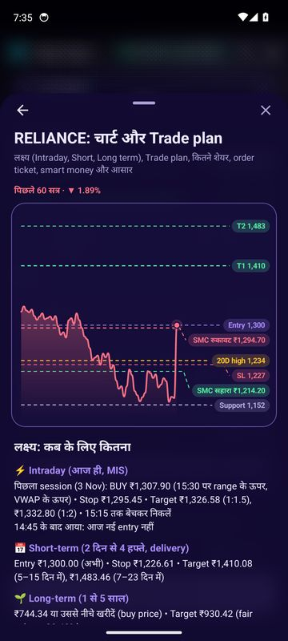
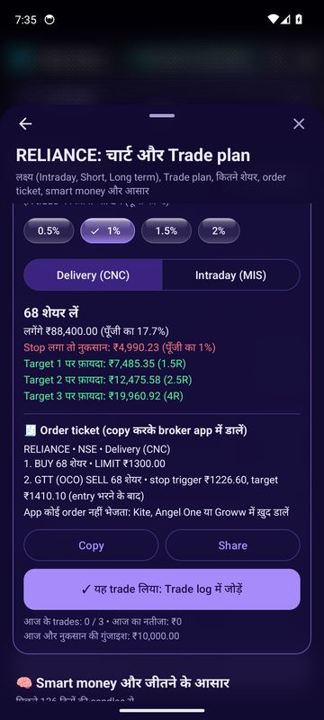
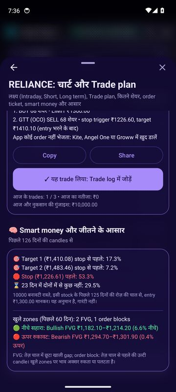
R/S: company कितनी मज़बूत
R/S (रोहित सिलेक्शन) chart नहीं, company के कारोबार को जाँचता है।
R/S company को 10 हिस्सों में 0–100 अंक देता है: नतीजों की गुणवत्ता (18), बढ़त (12), cash flow (10), कर्ज़ (10), shareholding (12), insider और bulk/block deals (8), valuation (12), 3 साल का भाव (8), स्थिरता (5) और जोखिम (5)।
| R/S score | दर्जा |
|---|---|
| 75+ | बहुत मज़बूत |
| 62+ | मज़बूत |
| 48+ | ठीक-ठाक |
| 35+ | सावधानी |
| 35 से कम | दूर रहें |
- असली कीमत और खरीद भाव: पहले sector के हिसाब से एक model कीमत निकालता है (bank में book value, factory वाली companies में EV/EBITDA, IT/FMCG/pharma में PEG)। फिर company के अपने आम P/E (पिछले 3 साल का बीच वाला) पर आज की कमाई से दूसरी कीमत, और असली कीमत = दोनों का बीच। अकेला model कई अच्छी companies को उनके किसी भी पुराने भाव से बहुत नीचे आँकता था, इसलिए दोनों मिलाए जाते हैं। Auditor का इस्तीफ़ा, बहुत कर्ज़ या FII/DII का घटना हो तो कटौती। खरीद भाव = असली कीमत में से सुरक्षा का हिस्सा (margin of safety): बड़ी companies पर 20%, मझोली पर 27.5%, छोटी पर 35%।
- Flags: promoters ने 15% से ज़्यादा शेयर गिरवी रखे हों तो "दूर रहें"; ब्याज का cover कम या मुनाफ़े के पीछे cash कम हो तो "सावधानी"। बिना किसी ख़बर के volume 3 गुना हो तो 🚩 Red Flag।
- ⭐ सबसे अच्छा मौका: भाव खरीद भाव से नीचे, weekly sweep, और कोई रोक नहीं।
- पूरा हिसाब देखने के लिए R/S card में Framework का पूरा हिसाब दबाएँ: model की कीमत, company के P/E वाली कीमत, बीच की कीमत, कटौती और खरीद भाव, एक-एक line में।
- R/S card के हर हिस्से को दबाएँ: उसका पूरा data (हर quarter के नतीजे, insider सौदे, valuation का हिसाब) नीचे खुलता है।
- Data कम हो (40% से कम) तो "Data कम" लिखा आता है। जिस हिस्से का data नहीं, उसे बीच के 50 अंक मिलते हैं।
R/S का data रोज़ शाम एक बार नया होता है (Screener, NSE और Yahoo से)। List को R/S से sort भी कर सकते हैं।
आज के Intraday
Menu → आज के Intraday: app खुद चुनता है कि आज कौन BUY, कौन SELL।
App scan के सबसे ज़्यादा trade हुए लगभग 120 NSE stocks की आज की 5-minute candles देखता है और opening range breakout (ORB) का नियम लगाता है:
- 9:15 से 9:30 के बीच का high और low = "opening range"। इसलिए picks 9:30 के बाद आते हैं।
- Range के ऊपर और VWAP के ऊपर बंद = BUY; range के नीचे और VWAP के नीचे बंद = SELL।
- Stop range के बीच में; target 1:1.5 और 1:2।
- सिर्फ़ वही calls ऊपर दिखते हैं जो अभी भी लिए जा सकते हैं, entry के सबसे पास वाले पहले। Target लग चुका हो, भाव entry से बहुत आगे निकल गया हो ("पीछा न करें"), breakout वापस range में आ गया हो, या 14:45 निकल गया हो, तो वह नीचे "बाकी calls" में, वजह के साथ।
किसी pick को दबाएँ तो उसका detail खुलता है।
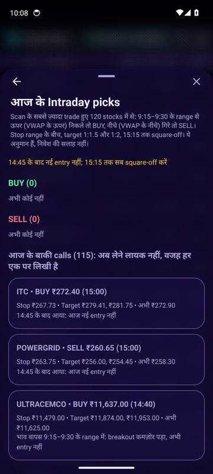
📝 Paper Trading
नकली पैसे, असली भाव। असली पैसा लगाने से पहले यहाँ सीखें।
App में ऊपर 📝 बटन, या Menu → Paper Trading। Account ₹10,00,000 के नकली पैसों से शुरू होता है। कोई असली order कहीं नहीं जाता।
पहला paper order, कदम-दर-कदम
- + नया order दबाएँ।
- Stock का symbol लिखें (जैसे RELIANCE)। नीचे "अभी का भाव" आ जाता है।
- BUY या SELL चुनें।
- Intraday (MIS) या Delivery (CNC) चुनें।
- Order का प्रकार चुनें (नीचे table)।
- कितने शेयर लिखें। चाहें तो stop-loss और target भी।
- नीचे देखें: कितना पैसा लगेगा, charges लगभग कितने, stop लगा तो कितना नुकसान। फिर हरे BUY 10 RELIANCE (या लाल SELL) बटन दबाएँ।
| Order का प्रकार | कब भरता है | कब इस्तेमाल करें |
|---|---|---|
| Market | तुरंत, अभी के भाव पर | जल्दी अंदर या बाहर जाना हो |
| Limit | आपके भाव पर या उससे बेहतर | किसी तय भाव पर ही ख़रीदना/बेचना |
| SL | Trigger छूने पर, limit तक | Breakout पर entry (trigger = entry) |
| SL-M | Trigger छूने पर, market भाव पर | पक्का निकलना हो, भाव जो भी हो |
नियम, बिल्कुल असली जैसे
- Delivery (CNC): पूरा पैसा लगता है, शेयर बेचने तक रहते हैं।
- Intraday (MIS): मूल्य का पाँचवाँ हिस्सा margin लगता है, short sell (पहले बेचना) भी कर सकते हैं, और 15:15 पर अपने-आप square-off। नई intraday entry सिर्फ़ 9:15 से 15:15 तक।
- Stop-loss और target: जो पहले लगे, trade अपने-आप बंद।
- बाज़ार बंद हो तो: order अगली सुबह 9:15 पर भरता है (AMO)। दिन में न भरा order शाम को रद्द।
- Charges: brokerage (intraday 0.03% या ₹20, delivery मुफ़्त), STT, exchange charges, SEBI fee, GST, stamp duty, और delivery बेचने पर DP charge, सब कटते हैं।
- Orders 5-minute candles से भरते हैं। अगर भाव gap में खुले, तो खुलने वाले भाव पर।
चार tabs
- Intraday: खुले intraday trades (औसत भाव, अभी का भाव, नफ़ा-नुकसान), फिर हाल के बंद trades।
- Delivery: आपके delivery शेयर (holdings), कितने दिन से, कितनी value।
- Orders: रुके orders (दबाकर रद्द), और पिछले orders: भरे, रद्द या समय ख़त्म, वजह के साथ।
- हिसाब: कितने trades, जीते-हारे, जीत %, कुल नफ़ा-नुकसान (charges के बाद), profit factor, सबसे बड़ी गिरावट, और app के plan से लिए trades बनाम अपने चुने। यहीं Account फिर से शुरू करें (₹1 लाख से ₹1 करोड़)।
खरीदे शेयर का पूरा हिसाब
Intraday या Delivery tab में किसी खुले शेयर को दबाएँ। ऊपर एक नई sheet खुलती है, चार हिस्सों में:
- अभी: अभी का भाव (किस समय का), फ़ायदा/नुकसान ₹ और % में, अभी की value, और अभी बंद करें तो charges काटकर कितना बचेगा।
- लेते समय: कितने शेयर, औसत भाव, लगाया पैसा (intraday में रुका margin), कब लिया, कितने दिन से (intraday में "15:15 पर अपने-आप square-off"), और किसने चुना (आप या app का plan)।
- Stop-loss और target: हर एक का भाव, अभी के भाव से कितने % दूर, और लगा तो charges के बाद कितना फ़ायदा या नुकसान। साथ में breakeven: वह भाव जिस पर बेचें तो न फ़ायदा, न नुकसान।
- Charges: लेते समय कितने दिए, और अभी बंद करें तो कितने और लगेंगे (अंदाज़ा)।
नीचे उस शेयर के सारे orders (रुके और भरे), और चार बटन: अभी बंद करें (Market), Stop-loss / Target बदलें, इसी stock का नया order और Stock खोलें। Sheet खुली रहे तो भाव ताज़ा होने पर अंक भी बदलते हैं; शेयर बिक जाए तो sheet अपने-आप बंद।
Section खुला हो तो भाव हर 30 सेकंड ताज़ा होते हैं; app बंद हो तब भी बाज़ार के समय हर 15 मिनट जाँच होती है और भरने, stop, target या square-off पर notification आता है।
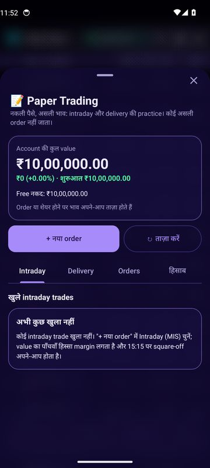
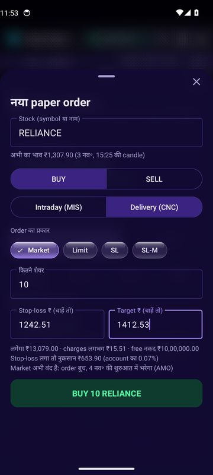
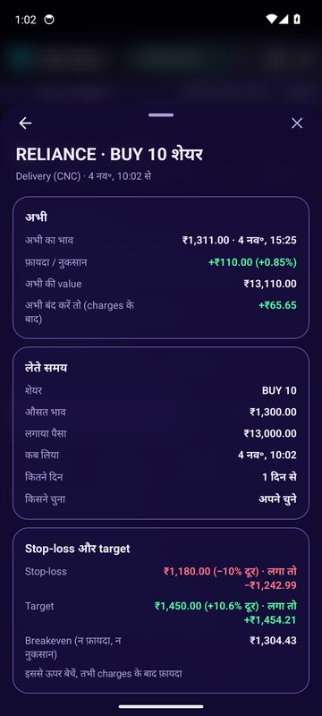
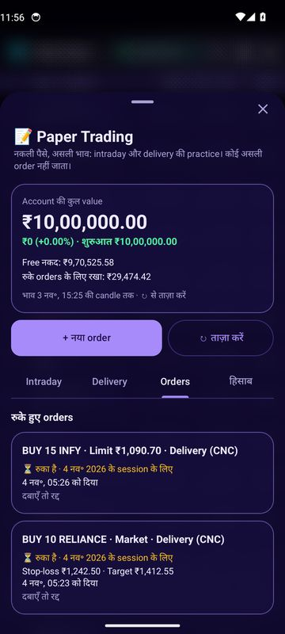
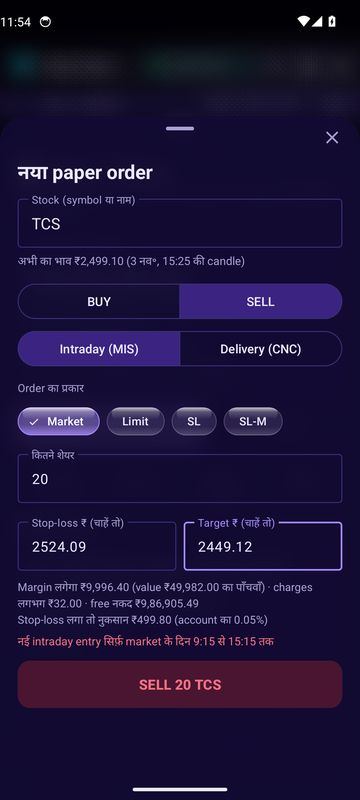
💰 बड़े पैसे की चाल
Menu → बड़े पैसे की चाल: बड़े खिलाड़ी (institutions, operators) कहाँ चुपचाप ख़रीद रहे हैं, और कहाँ नकली हलचल है।
बड़े निवेशक एक दिन में भाव उछाले बिना शेयर जमा करते हैं, और operators कभी-कभी उसी दिन ख़रीद-बेचकर नकली volume बनाते हैं। चार्ट में यह साफ़ नहीं दिखता, पर NSE हर शाम हर शेयर का delivery data देता है: आज कितने शेयर का सौदा हुआ, और उनमें से कितने सच में किसी के demat में गए। App इसी से हर शाम चार signal बनाता है।
Data कब आता है
NSE की file शाम को आती है; app की file शाम 7:15, रात 9:15 या 12:15 के बाद ताज़ा होती है। यह जाँच शनिवार-रविवार को भी होती है, क्योंकि NSE कभी-कभी तब भी खुलता है (Budget day, दिवाली का Muhurat trading)। ऊपर लिखा रहता है किस दिन की शाम का data है। BSE-only और trade-to-trade (BE, BZ) शेयरों का delivery data नहीं होता।
चार tabs
| Tab | मतलब | नियम |
|---|---|---|
| 🟢 चुपचाप खरीद | कोई भाव बढ़ाए बिना शेयर उठा रहा है | आज delivery % अपने 20 सत्र के औसत का 1.8 गुना से ज़्यादा, भाव ±2% के अंदर, 1 लाख से ज़्यादा शेयर |
| 🔴 Churn / जाल | बहुत volume, पर लगभग सब उसी दिन कट गया | Volume 20 सत्र के औसत का 4 गुना से ज़्यादा, delivery 20% से कम |
| 🤝 Deals | Bulk/block deals में कुल मिलाकर ख़रीद ज़्यादा या बिक्री | 30 सत्र में सब clients की ख़रीद − बिक्री; लगातार 2+ deal वाले दिन net ख़रीद हो तो signal |
| 👔 Promoter | Company के मालिक बाज़ार से ख़रीद रहे या बेच रहे | 90 दिन में market से ख़रीद − बिक्री (ESOP, gift, off-market नहीं गिने)। यह data NSE से तभी आता है जब NSE दे; पुराना हो तो tab में तारीख़ के साथ चेतावनी दिखती है |
हर tab में ऊपर track record की लाइन होती है: पिछले एक साल में यह signal कितनी बार आया, और 10 सत्र बाद भाव औसतन कितना चला, उन्हीं दिनों में सब शेयरों के औसत के मुक़ाबले। 30 बार से कम आया हो तो "data जमा हो रहा है"।
कदम-दर-कदम
- Menu → बड़े पैसे की चाल खोलें।
- 🟢 चुपचाप खरीद tab में शेयर ताक़त के क्रम में हैं: सबसे ऊपर वह जिसकी आज की delivery अपने औसत से सबसे ज़्यादा गुना है।
- किसी शेयर को दबाएँ: उसका detail खुलता है, जिसमें नीचे "💰 बड़े पैसे की चाल" card है। शेयर का chart आपके scan में न आया हो, तो app उसी समय उसका chart ले आता है (कुछ सेकंड)।
- किसी row में "🆕 सिर्फ़ N सत्र का data" लिखा हो तो वह कुछ ही दिन पहले listed शेयर है। App का chart, score और trade plan कम से कम 21 सत्र के data से बनते हैं, इसलिए scan की list में वह score के बिना, सबसे नीचे आता है; दबाने पर ऊपर वजह, फिर उसका अब तक का भाव एक छोटे chart में (पहले दिन का, अब का, सबसे ऊँचा और सबसे नीचा भाव), और उसका बड़े पैसे की चाल वाला card खुलता है। जैसे 4 Nov को Deals tab में EDELALTS (3 सत्र) और BONFIG (9 सत्र): नए IPO में bulk/block deals सबसे ज़्यादा होती हैं।
- Card में score (0–100) और उसके हिस्से देखें; हर हिस्सा दबाने पर पूरा हिसाब खुलता है। नीचे पिछले 20 सत्र का delivery % (bars) और volume (रेखा)।
- 🔴 Churn / जाल tab भी देखें: इनमें से कोई आपकी watchlist में हो तो सावधान।
Score के हिस्से
- Delivery spike, 30 अंक तक: आज delivery औसत के 1 गुना पर 0, 3 गुना पर 30।
- Delivery का जमा होना, 20 तक: पिछले 5 सत्र का औसत, 20 सत्र के औसत का 1.5 गुना हो तो पूरे।
- Deals की net ख़रीद, 25 तक; Promoters की net ख़रीद, 25 तक (₹5 करोड़ पर पूरे)।
- Churn पर 30 अंक कटते हैं; deals या promoters की net बिक्री पर उसी पैमाने पर।
उदाहरण (4 Nov 2026 की शाम का असली data)
PAISALO में आज delivery 68.7% रही, जबकि पिछले 20 सत्र का औसत 32.7% था, यानी 2.1 गुना। भाव सिर्फ़ +0.08% हिला और 43 लाख शेयर का सौदा हुआ। तीनों शर्तें पूरी, इसलिए 🟢 चुपचाप खरीद। उसी शाम पूरे market में 7 शेयरों में चुपचाप खरीद और 26 में churn मिला।
Track record ने उस दिन बताया: चुपचाप खरीद पिछले साल 733 बार आई, 10 सत्र बाद औसत −0.22% (सब शेयर −0.27%), यानी औसत से बस ज़रा-सा बेहतर। जबकि churn वाले शेयर 10 सत्र में औसतन −1.51% गिरे (सब शेयर −0.27%)। मतलब: churn की चेतावनी ज़्यादा काम की है, और चुपचाप खरीद अकेले ख़रीदने की वजह नहीं।
List, filter और alerts
- Scan की list में card की नीचे वाली लाइन में 🟢 जमा या 🔴 जाल दिखता है।
- Filters में "बड़े पैसे की चाल": सिर्फ़ चुपचाप खरीद या Churn वाले छिपाएँ।
- Watchlist के शेयर में नया signal आए तो notification; शाम को (data देर से आए तो अगली सुबह 8 से 9:15 के बीच) पूरे market का सार। Menu → स्कैन में "बड़े पैसे की चाल के alerts" से बंद करें।
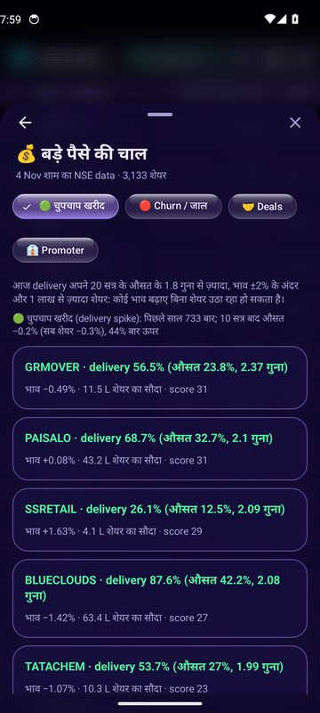
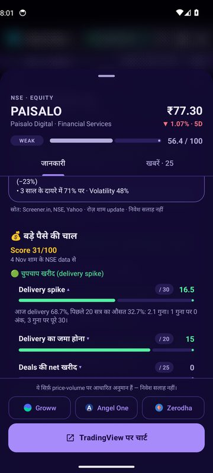
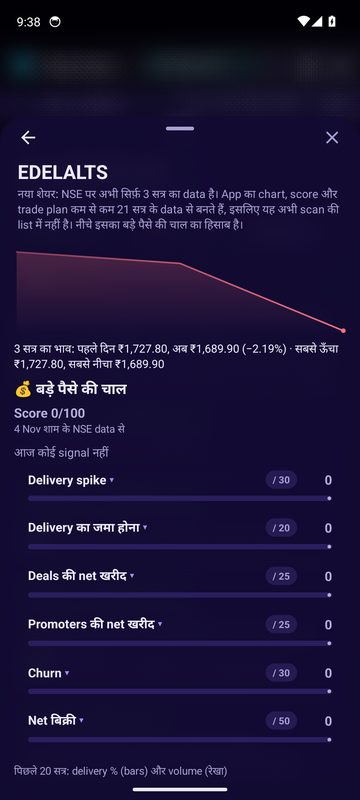
Trade log और risk guard
Menu → Trade log: आपके असली trades की डायरी।
Broker में असली trade लेने के बाद Trade window में ✓ यह trade लिया दबाएँ। Trade यहाँ जुड़ जाता है: entry, stop, target, और खुला रहने तक scan के भाव पर नफ़ा-नुकसान। निकलने पर trade दबाकर exit भाव डालें, नफ़ा-नुकसान अपने-आप जुड़ता है।
Risk guard (आपका पहरेदार)
- एक दिन में ज़्यादा से ज़्यादा 3 trades (बदल सकते हैं: 1, 2, 3, 5, 10)।
- दिन का नुकसान पूँजी के 2% तक पहुँचे तो उस दिन और trade नहीं (1%, 2%, 3%, 5%)।
- 14:45 के बाद नई intraday entry नहीं।
- Intraday trade खुला हो तो 15:10 पर square-off की याद।
नियम टूटे तो app पहले चेतावनी देता है: रहने दें या फिर भी जोड़ें। पूँजी और नियम बदलें से अपनी सीमाएँ रखें।
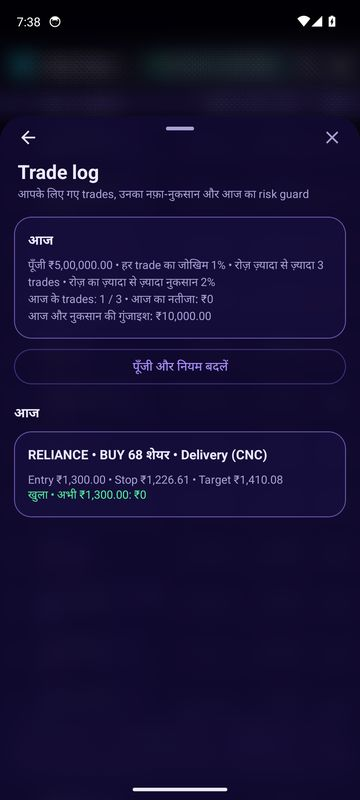
Watchlist
जिन stocks पर नज़र रखनी है, उन्हें ★ लगाकर एक जगह।
Stock को watchlist में जोड़ें: compact table में line दबाकर रखें, cards में ☆ दबाएँ। फिर ★ Watchlist दबाने पर Watchlist page खुलता है।
- ऊपर का हिसाब: जोड़ने के बाद से औसत return, पिछले 20 दिन की line, और pills: ▲ फ़ायदे में, ▼ नुकसान में, 🔔 alerts चालू। Pill दबाएँ तो सिर्फ़ वही stocks, दोबारा दबाएँ तो सब।
- हर stock: किस भाव पर जोड़ा, तब से कितना %, और एक पट्टी: breakout से पहले support से breakout भाव तक, breakout के बाद SL से अगले target तक। गोला बताता है भाव अभी कहाँ है।
- Sort: Return, नए पहले, Target के पास। दोबारा दबाने पर उल्टा क्रम।
- ≡ menu: सभी / सिर्फ़ फ़ायदे वाले / सिर्फ़ नुकसान वाले / सिर्फ़ alert वाले, 💼 पोर्टफोलियो बाँटें, और Home की list में दिखाएँ।
- पोर्टफोलियो बाँटें: रकम डालें, app उसे watchlist के stocks में बाँटता है। कम उतार-चढ़ाव वाले stock को ज़्यादा हिस्सा, साथ में शेयर और tax (1 साल से कम = short-term 20%, ज़्यादा = long-term 12.5%)।
- बाएँ swipe करके हटाएँ, दबाकर रखें तो अपना खरीद भाव डालें, ↻ से भाव ताज़ा।
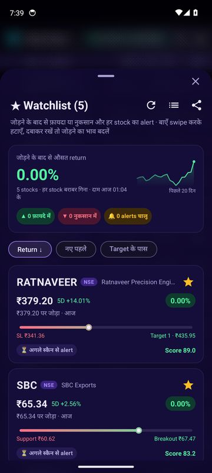
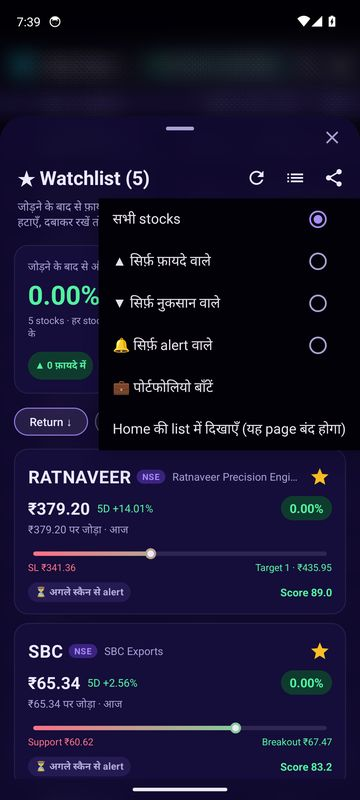
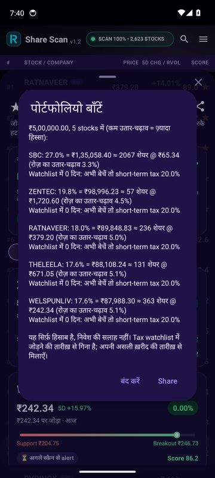
Alerts और notifications
App बंद हो तब भी ज़रूरी बातें phone पर।
| Notification | कब आता है | कहाँ चालू करें |
|---|---|---|
| Watchlist alerts | ★ वाला stock breakout trigger पार करे, फिर हर target पर और stop-loss टूटने पर | Menu → स्कैन |
| नए STRONG और breakout | Auto-scan में कोई stock नया STRONG बने या breakout करे (आपके filters के अंदर) | Menu → स्कैन |
| Watchlist की ख़बरें | सुबह 8 से 9:15 के बीच रात भर की ख़बरें, और दिन में बड़ी घोषणा आते ही | Menu → स्कैन |
| बड़े पैसे की चाल | Watchlist के शेयर में चुपचाप खरीद, churn, deals या promoter की खरीद-बिक्री; शाम (या अगली सुबह) पूरे market का सार | Menu → स्कैन |
| Paper Trading | Order भरा, stop, target या 15:15 square-off | अपने-आप |
| Square-off याद | 15:10 पर, Trade log में intraday trade खुला हो तो | अपने-आप |
| Scan और update | Scan की progress और पूरा होना, नया version download | अपने-आप |
रोज़ का आसान तरीका
शुरुआत करने वाले के लिए एक सीधा रोज़ का क्रम।
Watchlist की ख़बरें देखें। Events (नतीजे, dividend) की तारीख़ें नोट करें।
कुछ न करें। Opening range बनने दें; पहले 15 मिनट सबसे ज़्यादा उछाल वाले होते हैं।
आज के Intraday picks देखें। जो पसंद आए, पहले Paper Trading में लें।
Auto-scan और watchlist alerts पर नज़र। Breakout आए तो Trade window में plan और कितने शेयर देखें।
नई intraday entry नहीं। खुले intraday trades बंद करें (Paper में 15:15 पर अपने-आप)।
Scan चलाएँ, STRONG stocks के detail और R/S पढ़ें, अच्छे वाले ★ करें। Paper Trading का हिसाब देखें।
Quality filter और R/S से लंबी अवधि के लिए companies छाँटें; Track record देखें।
शब्दकोश
App में आने वाले शब्द, आसान भाषा में।
- Breakout
- भाव का किसी पुराने ऊँचे स्तर (जैसे 20 दिन का high) के ऊपर निकलना।
- Support (सहारा)
- वह भाव जहाँ बार-बार गिरकर भी stock रुक जाता है, जैसे फ़र्श।
- Resistance (रुकावट)
- वह भाव जहाँ चढ़ाई बार-बार रुकती है, जैसे छत।
- Entry
- जिस भाव पर trade में घुसना है।
- Stop-loss (SL)
- वह भाव जहाँ ग़लत साबित होने पर नुकसान छोटा रखकर निकल जाते हैं।
- Target (T1, T2)
- जिस भाव पर फ़ायदा लेकर निकलना है।
- R (risk)
- Entry से stop तक का फ़र्क, प्रति शेयर। 2R target = जोखिम का दुगना फ़ायदा।
- आज का बदलाव (1D)
- पिछले कारोबारी दिन के बंद भाव से आज के भाव तक का % बदलाव।
- RVOL
- आज का volume ÷ पिछले 20 दिनों का औसत volume।
- ATR
- Stock रोज़ औसतन कितना ऊपर-नीचे चलता है।
- VWAP
- दिन का volume से तौला गया औसत भाव। इसके ऊपर = ख़रीदार मज़बूत।
- Opening range (ORB)
- 9:15–9:30 का high-low; उसके बाहर निकलना intraday breakout।
- MIS (Intraday)
- उसी दिन ख़रीदना-बेचना; margin पर, 15:15 तक बंद।
- CNC (Delivery)
- पूरा पैसा देकर शेयर demat में रखना, जितने दिन चाहें।
- Margin
- Intraday में broker का दिया उधार; आप मूल्य का एक हिस्सा (लगभग पाँचवाँ) लगाते हैं।
- Square-off
- Intraday trade को दिन ख़त्म होने से पहले बंद करना।
- Short sell
- पहले बेचना, बाद में सस्ते में ख़रीदकर बंद करना। सिर्फ़ intraday में।
- Market / Limit order
- Market = अभी के भाव पर; Limit = आपके तय भाव या उससे बेहतर पर।
- SL / SL-M order
- Trigger भाव छूने पर चालू होने वाला order; SL limit तक, SL-M market पर।
- AMO
- बाज़ार बंद होने पर दिया order, जो अगले session की शुरुआत में भरता है।
- GTT / OCO
- Broker में लंबे समय तक रहने वाला trigger; OCO में stop और target, जो एक लगे दूसरा रद्द।
- FVG
- Fair value gap: तेज़ चाल में तीन candles के बीच छूटा खाली दायरा।
- Order block
- तेज़ चाल से ठीक पहले की उल्टी candle; भाव वहाँ अक्सर रुकता है।
- RSI
- 0–100: 70 से ऊपर बहुत चढ़ चुका, 30 से नीचे बहुत गिर चुका।
- MACD
- दो औसतों का फ़र्क; signal line को नीचे से ऊपर काटे तो तेज़ी का इशारा।
- DMA / EMA
- Moving average: पिछले कुछ दिनों का औसत भाव (जैसे 50 DMA)।
- P/E, P/B
- भाव ÷ प्रति शेयर कमाई; भाव ÷ प्रति शेयर book value।
- आम P/E (usual P/E)
- पिछले 3 साल में company का P/E ज़्यादातर कितना रहा (हर महीने के आख़िर का P/E, उनका बीच वाला)।
- असली कीमत (fair value)
- Company के कारोबार से निकाला गया एक शेयर का अंदाज़न मूल्य; बाज़ार का भाव इससे ऊपर-नीचे चलता है।
- Margin of safety, खरीद भाव
- असली कीमत में से छोड़ा गया सुरक्षा का हिस्सा (20%–35%); जो बचे वह खरीद भाव।
- ROCE
- लगाई गई पूँजी पर company कितना कमाती है, %।
- Debt/Equity
- कर्ज़ ÷ अपनी पूँजी। कम = सुरक्षित।
- Promoter, Pledge
- Company के मालिक; pledge = उन्होंने अपने शेयर गिरवी रखे।
- FII / DII
- विदेशी और देसी बड़े संस्थागत निवेशक।
- Bulk / Block deal
- एक बार में बहुत बड़ा सौदा, exchange पर दर्ज।
- Delivery %
- आज के कुल सौदे में से कितने % शेयर सच में किसी के demat में गए (उसी दिन कटे नहीं)।
- Deliverable quantity
- आज के सौदे में से वे शेयर जिनकी delivery हुई; NSE हर शाम बताता है।
- Accumulation (चुपचाप खरीद)
- बड़े ख़रीदार का धीरे-धीरे, भाव उछाले बिना शेयर जमा करना।
- Churn (जाल)
- बहुत volume पर delivery बहुत कम: वही शेयर उसी दिन ख़रीदे-बेचे गए; नकली हलचल हो सकती है।
- Net ख़रीद / बिक्री
- कुल ख़रीद में से कुल बिक्री घटाकर जो बचे; plus = ख़रीद ज़्यादा।
- T2T (trade-to-trade)
- BE/BZ series के शेयर जिनमें हर सौदे की delivery ज़रूरी है, इसलिए delivery % का मतलब नहीं बनता।
- Listing, नया listing
- शेयर का पहली बार exchange पर कारोबार शुरू होना (जैसे IPO के बाद)। नए listed शेयर के पास कुछ ही दिनों का भाव होता है।
- सत्र (session)
- एक कारोबारी दिन: बाज़ार खुलने से बंद होने तक। App का score कम से कम 21 सत्र के भाव से बनता है।
- Trading रुकना (suspension)
- Exchange किसी शेयर का कारोबार रोक दे (जैसे नियम न मानने पर); तब न ख़रीद सकते हैं, न बेच सकते हैं।
- Brand (ब्रांड)
- वह नाम जिससे company अपना सामान बेचती है, जैसे ITC का Aashirvaad आटा। एक company के कई brands हो सकते हैं।
- Market cap
- Company की कुल बाज़ार value = भाव × कुल शेयर।
- Win rate, Profit factor
- जीते trades का %; कुल जीत ÷ कुल हार (1 से ऊपर = फ़ायदे में)।
- Drawdown
- सबसे ऊँचे स्तर से account की सबसे बड़ी गिरावट।
- Breakeven
- वह भाव जिस पर बेचें तो लेने-बेचने के charges मिलाकर न फ़ायदा, न नुकसान।
- STT
- Securities Transaction Tax, सरकार का हर सौदे पर tax।
आम सवाल
जो बातें अक्सर पूछी जाती हैं।
Scan बहुत धीमा है या रुक जाता है।
Internet देखें। BSE और SME भी चालू हों तो scan लंबा होता है; Menu → स्कैन में सिर्फ़ NSE रखें। Screen बंद होने पर भी scan notification के साथ चलता है।
"कोई stock match नहीं हुआ" लिखा आता है।
Filters बहुत कड़े हैं। Filters → Reset करें, या sector filter हटाएँ।
भाव पुराना लग रहा है।
भाव Yahoo Finance से आते हैं और कुछ मिनट पीछे हो सकते हैं। नया scan चलाएँ या live auto-scan चालू करें। Paper Trading में ↻ दबाएँ; पिछले दिन का भाव तारीख़ के साथ दिखता है।
आज के Intraday में कुछ नहीं दिख रहा।
Picks 9:30 के बाद आते हैं, जब opening range बन जाती है। बाज़ार बंद हो या छुट्टी हो तो आज का कोई call नहीं होता।
Paper order भरा नहीं।
Limit, SL और SL-M orders तभी भरते हैं जब भाव वहाँ पहुँचे; दिन ख़त्म होने पर रद्द। बाज़ार बंद में दिया order अगली सुबह भरता है। Intraday order सिर्फ़ 9:15 से 15:15 तक।
बड़े पैसे की चाल में आज का data नहीं दिख रहा।
NSE की delivery file शाम को आती है; app की file शाम 7:15 के बाद (कभी रात 12:15 के बाद) ताज़ा होती है। छुट्टी के दिन नया data नहीं होता। ऊपर लिखी तारीख़ देखें।
किसी शेयर के card में "data नहीं" लिखा है।
BSE-only और trade-to-trade (BE, BZ) शेयरों का delivery data NSE नहीं देता, और जिस दिन शेयर में सौदा ही न हुआ हो उस दिन भी नहीं।
Scan ने 2,630 शेयर जाँचे, पर score 2,359 का ही: list में कम शेयर क्यों?
बाक़ी शेयरों का chart Yahoo Finance से नहीं मिला। चार वजहें होती हैं: (1) Yahoo ने उस समय जवाब नहीं दिया (internet धीमा हो या Yahoo व्यस्त हो); अब scan ऐसे शेयर आख़िर में एक बार और माँगता है, इसलिए ये बहुत कम रह जाते हैं; (2) शेयर कुछ ही दिन पहले listed हुआ, और score के लिए कम से कम 21 सत्र का data चाहिए; (3) trading रुकी हुई है या नाम बदला है; (4) Yahoo उसे रखता ही नहीं (कई SME शेयर)। ये शेयर भी list में हैं: सबसे नीचे, "Chart नहीं मिला" और वजह के साथ, और 🔍 खोज में मिलते हैं (कोई filter या top 25/50/100/200 चुना हो तो नहीं दिखते)। दबाने पर app उसी समय chart लाने की कोशिश करता है; बड़े पैसे की चाल का नया शेयर हो तो उसका card और अब तक का छोटा chart खुलता है। ज़्यादा जानकारी: Stocks की list पढ़ना।
Promoter tab खाली क्यों है?
Promoters के trades NSE की insider filings से आते हैं, और NSE यह data कभी-कभी महीनों तक नहीं देता। तब tab में लिखा आता है कि data किस तारीख़ तक का है। Delivery और deals वाले signal इससे नहीं रुकते।
बड़े पैसे की चाल का score 70 है, ख़रीद लूँ?
नहीं, सिर्फ़ इसी से नहीं। Score बताता है कि delivery, deals और promoter एक ही तरफ़ इशारा कर रहे हैं। Track record देखें, chart और R/S देखें, stop-loss तय करें, और पहले Paper Trading में परखें।
Long-term का खरीद भाव अभी के भाव से इतना नीचे क्यों?
खरीद भाव असली कीमत से 20%–35% नीचे रखा जाता है, ताकि अंदाज़ा ग़लत निकले तब भी सुरक्षा रहे। असली कीमत sector के model और company के अपने आम P/E का बीच है; दोनों से भी company भाव से सस्ती न दिखे तो खरीद भाव नीचे ही रहेगा। R/S card में Framework का पूरा हिसाब दबाकर हर क़दम देखें।
Paper Trading में फ़ायदा दिख रहा है, फिर भी बेचने पर कम क्यों मिला?
शेयर की line पर दिखा फ़ायदा charges से पहले का है। शेयर दबाकर पूरा हिसाब खोलें: "अभी बंद करें तो (charges के बाद)" वाली line बताती है कि बेचने पर असल में कितना बचेगा, और breakeven बताता है कि किस भाव से ऊपर फ़ायदा शुरू होता है।
किसी company के ब्रांड क्यों नहीं दिखते?
Brands की तस्वीरें company की अपनी website से एक-एक करके जोड़ी जाती हैं। अभी ITC के 59 brands app में हैं; बाक़ी companies के अगले updates में जुड़ते जाएँगे। तब तक "क्या बनाती है" में उसके products दिखते हैं।
Update install नहीं हो रहा।
पहली बार Android "इस source से install" की अनुमति माँगता है; उसे चालू करके back दबाएँ। Phone में जगह कम हो तो थोड़ी खाली करें।
क्या app मेरे broker में order डालता है?
नहीं। App कभी असली order नहीं भेजता। Order ticket copy करके आप ख़ुद broker app में डालते हैं।
Phone बदला तो watchlist?
Login किया हो तो नए phone में उसी account से login करें, watchlist वापस। Login के बिना watchlist सिर्फ़ उसी phone में रहती है।
STRONG stock ख़रीदें तो फ़ायदा पक्का?
नहीं। Score सिर्फ़ बताता है कि setup अच्छा दिखता है। हर trade में stop-loss रखें, 1% से ज़्यादा जोखिम न लें, और पहले Paper Trading से परखें।